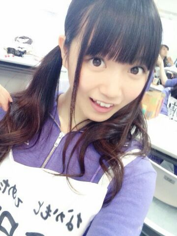
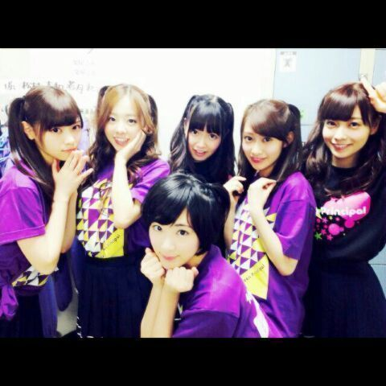

| 2014/06 02 Mon | ひめたん-OoO-その448 |
プリンシパル頑張ってます！
ひめたんは正直苦戦中です！
不器用な人間だから困ったものだ！
でも来てくださる審査員のみなさんには
そーゆーのあんま気にせずに
楽しんでいただけたらいいな(＊^^＊)
とゆーてメールでは
結構ネガティブだったりします(笑)
もっと楽しいメールがいいよねー
嬉しい報告ができなくて
ほんとごめんねー
乃木ジャー

昨日は初めて2幕に出演することができました
投票してくださった審査員のみなさん
ありがとうございました
メンバーのみんなからも
おめでとうっていっぱい言ってもらえて
嬉しかったです＊
といっても
本役ではなくてアンサンブル。
いや、嬉しいよ！
でももうちょっと頑張らなきゃなー
せっかくセリフ覚えたのに悔しいでしょー

夜公演 2幕に出られなかったみんなで
ハーフツインしちゃったー
みんなご乱心(∩^o^)⊃━━━━━☆゜.*・。
あっみなさんもうチェック済みかな？
夏の全国ツアーが決まりました！
日程とか詳しいことは公式サイトを
チェックしてほしいなーと思いますが
大阪、福岡、仙台、名古屋、そして東京。
嬉しいな（ ; ; ）ほんとに嬉しいな（ ; ; ）
月刊エンタメは
見てくださいましたかー？
まだよって方はぜひチェーック☆

 最近暑くなってきたのは
最近暑くなってきたのは
ひめたんがビームを出しすぎなのか
夏に近づいてきたのか。
どっちですか？普通なら後者ってこたえるよ。
普通ならね。
何のフリか知らんけど
普通に考えて後者ですよ
ひめたんそんなにびーむ出してないもーん
真夏さんが車の免許取って
ひめたんをドライブに誘いました。
行く？行かない？
行かない怖い(即答)
ツインテールとハーフツインの違いって何？
結ぶ髪の量！
ハーフツインはハーフって言ってるくらいだし
半分は結ばずに下ろしてるのよ
どう？
最近もバスケットゴールにぶつかってる？
やめてー誤解を生む言い方やめてー
あたしバスケのゴールでぶつかったの
人生で一度しかないわよ(´・ω・｀)
てぶくろ。逆から読んだら？
ろく、ぶ......
はっ！やめろ！バリアッッ！
ルンバとひめたんは、
どっちがお掃除上手なのー？
残念だけどルンバかな( ＾ω＾)
だってルンバ知ってる？
ルンバめっちゃ上手なんだからね
そしてひめたんはあんま上手じゃないからね
ひめたん的にはあれなの？
猫とシーチキンだったら犬派なの？
ねえ疲れてる？話聞くくらいするよ？
ひめたんの日記の
コメント欄下２ケタに46を踏んだ方へ
手書きでコメ返するコーナー
＼ ひめたん46 ／

いつもたくさんのコメント
ありがとうございます
日記のコメントでも
たくさん励ましてもらっちゃって
なんだか情けないなー......
ありがとう（ ; ; ）
がんばりますっ
あっそうそう聞いて！
今日収録があったんだけどね
ろってぃ (川村真洋ちゃん)がいきなり
ひめかーって来て
何かなーって思ったらなんと！
りぼんをプレゼントしてくれたの(＊´ω`＊)
何でも、お店でりぼんを見つけたら
日芽香にプレゼントしたくなったのって
わー嬉しいよろってぃー；；
写メは今度載せます♪
ひめたんもろってぃに何かお返ししたいなー
ろってぃ何が好きだろー......
明日はプリンシパルの前にひと仕事！
頑張ってまいります！
(＊´・ω・＊)
コメント(683)
2014/06/02 23:48